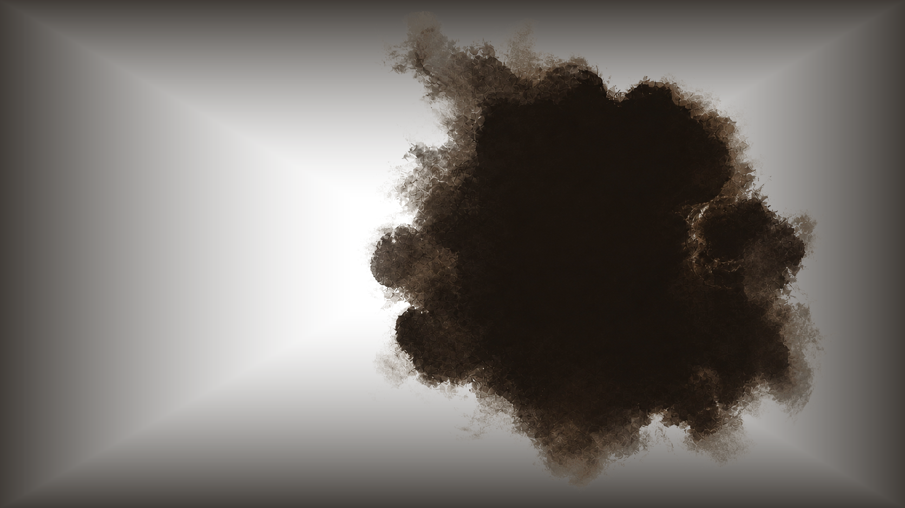

卷首 / ORIGIN
《卷云传》从甘肃武威出土的东汉铜奔马出发，
将一件两千年前的文物，重新写成一段关于
勇气、忠诚与文明相遇的故事。
历史留下了一种姿态，
我们想知道，
是什么让它完成了这一跃？
VOLUME ONE / ORIGIN
Legend of Juan Yun begins with the Eastern Han bronze galloping horse unearthed in Wuwei, Gansu, reimagining a two-thousand-year-old artifact as a story of courage, loyalty, and the meeting of civilizations.
History left behind a single gesture.
We want to know:
What made it take this leap?
卷首 ORIGIN
一匹马，带着一条路重新被看见。
A horse carries a road back into view.
一件文物，重新拥有生命；
一条古路，重新连接今天。
An artifact finds life again;
a road reconnects with today.